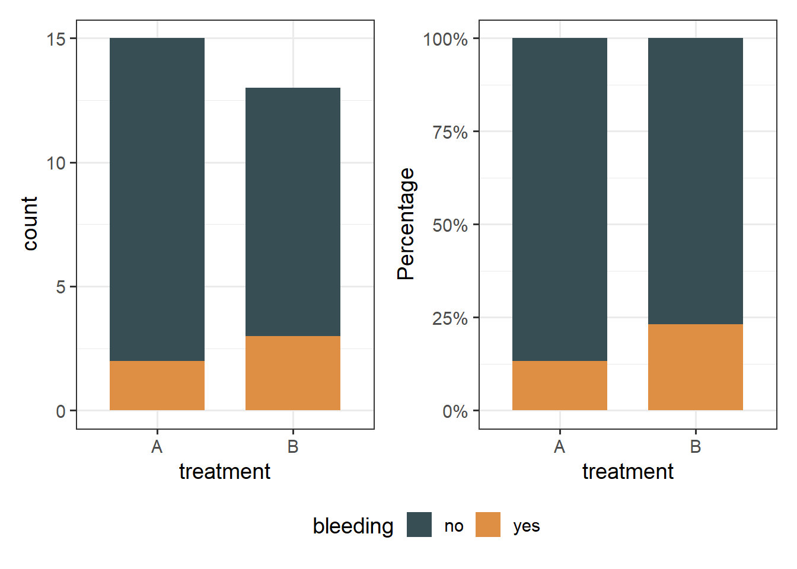

13 Fisher’s exact test
If we want to see whether there’s an association between two categorical variables and the assumption for the expected frequencies in the contingency table is not fulfilled, an alternative test to the chi-square test can be used.
Fisher came up with a method for computing the exact probability of the chi-square statistic that is accurate when sample sizes are small. This method is called Fisher’s exact test even though it’s not so much a test as a way of computing the exact probability of the chi-square statistic. This procedure is normally used on 2×2 contingency tables and with small samples. However, it can be used on larger contingency tables and with large samples, but in this case it becomes computationally intensive.
When we have finished this Chapter, we should be able to:
13.1 Research question and Hypothesis Testing
We consider the data in hemophilia dataset. In a survey there are two treatment regimens studied for controlling bleeding in 28 patients with hemophilia undergoing surgery. We want to investigate if there is an association between the treatment regimen (treatment A or B) and the bleeding complications (no or yes). The null hypothesis (\(H_0\)) is that the bleeding complications are independent from the treatment regimen, while the alternative (\(H_1\)) is that are dependent.
NOTE: In practice, the null hypothesis of independence, for our particular question, is no difference in the proportion of patients with bleeding complications compared with patients with no bleeding complications (\(p_{bleeding} = p_{no bleeding}\)).
13.2 Packages we need
We need to load the following packages:
13.3 Preraring the data
We import the data meldata in R:
library(readxl)
hemophilia <- read_excel(here("data", "hemophilia.xlsx"))We inspect the data and the type of variables:
glimpse(hemophilia)Rows: 28
Columns: 2
$ treatment <chr> "A", "A", "A", "B", "A", "B", "B", "A", "A", "A", "B", "A", …
$ bleeding <chr> "no", "no", "no", "yes", "no", "no", "no", "no", "yes", "no"…The dataset hemophilia has 28 patients (rows) and includes 2 variables (columns), the character (<chr>) variable named treatment and the character (<chr>) variable named bleeding. Both of them should be converted to factor (<fct>) variables using the convert_as_factor() function as follows:
hemophilia <- hemophilia %>%
convert_as_factor(treatment, bleeding)
glimpse(hemophilia)Rows: 28
Columns: 2
$ treatment <fct> A, A, A, B, A, B, B, A, A, A, B, A, B, B, A, A, B, B, B, A, …
$ bleeding <fct> no, no, no, yes, no, no, no, no, yes, no, no, no, yes, no, n…13.4 Plot the data
We count the number of patients with bleeding in the two regimens. It is useful to plot this as counts but also as percentages and compare them.
p3 <- hemophilia %>%
ggplot(aes(x = treatment, fill = bleeding)) +
geom_bar(width = 0.7) +
scale_fill_jama() +
theme_bw(base_size = 14) +
theme(legend.position = "bottom")
p4 <- hemophilia %>%
ggplot(aes(x = treatment, fill = bleeding)) +
geom_bar(position = "fill", width = 0.7) +
scale_y_continuous(labels=scales::percent) +
scale_fill_jama() +
ylab("Percentage") +
theme_bw(base_size = 14) +
theme(legend.position = "bottom")
p3 + p4 +
plot_layout(guides = "collect") & theme(legend.position = 'bottom')
The above bar plots with counts show graphically that the number of patients who had bleeding complications was similar in the two regimens. Note that the number of patients included in the study is small (n=28).
13.5 Contigency table and Expected frequencies
First, we will create a contingency 2x2 table (two categorical variables with exactly two levels each) with the frequencies using the Base R.
tb2 <- table(hemophilia$treatment, hemophilia$bleeding)
tb2
no yes
A 13 2
B 10 3Next, we will also create a more informative table with row percentages and marginal totals.
Using the function summary_factorlist() which is included in finalfit package for obtaining row percentages and marginal totals:
row_tb2 <- hemophilia %>%
finalfit::summary_factorlist(dependent = "bleeding", add_dependent_label = T,
explanatory = "treatment", add_col_totals = T,
include_col_totals_percent = F,
column = FALSE, total_col = TRUE)
knitr::kable(row_tb2) | Dependent: bleeding | no | yes | Total | |
|---|---|---|---|---|
| Total N | 23 | 5 | 28 | |
| treatment | A | 13 (86.7) | 2 (13.3) | 15 (100) |
| B | 10 (76.9) | 3 (23.1) | 13 (100) |
The contingency table using the datasummary_crosstab() from the modelsummary package:
modelsummary::datasummary_crosstab(treatment ~ bleeding, data = hemophilia)| treatment | no | yes | All | |
|---|---|---|---|---|
| A | N | 13 | 2 | 15 |
| % row | 86.7 | 13.3 | 100.0 | |
| B | N | 10 | 3 | 13 |
| % row | 76.9 | 23.1 | 100.0 | |
| All | N | 23 | 5 | 28 |
| % row | 82.1 | 17.9 | 100.0 |
From the row frequencies, there is not actually difference, as we noted in the plot we made above.
Now, we will calculate the expected frequencies for each cell using the expected() function from {epitools} package:
epitools::expected(tb2)
no yes
A 12.32143 2.678571
B 10.67857 2.321429In the above table there are 2 cells (50%) with expected counts less than 5 (specifically 2.67 and 2.32), so the Chi-square test is not the appropriate one. In this case the Fisher’s exact test should be used instead.
13.6 Run Fisher’s exact test
Finally, we run the Fisher’s exact test:
fisher.test(tb2)
Fisher's Exact Test for Count Data
data: tb2
p-value = 0.6389
alternative hypothesis: true odds ratio is not equal to 1
95 percent confidence interval:
0.1807204 26.9478788
sample estimates:
odds ratio
1.90363 fisher_test(tb2)# A tibble: 1 × 3
n p p.signif
* <int> <dbl> <chr>
1 28 0.639 ns The p = 0.64 is higher than 0.05. There is absence of evidence for an association between the treatment regimens and bleeding complications (failed to reject \(H_0\)).
13.7 Having only the counts
When we read an article which reports a chi-square or a fisher exact analysis we will see only the counts in a table without having the raw data of the categorical variables. In this instance, we can create the table using the matrix() function and run the tests. For our example of hemophilia we have the following table: